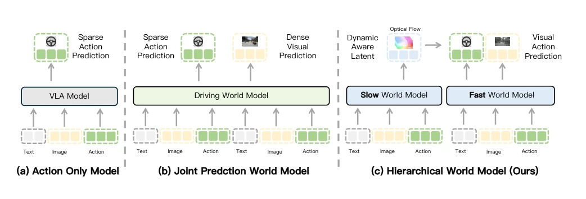
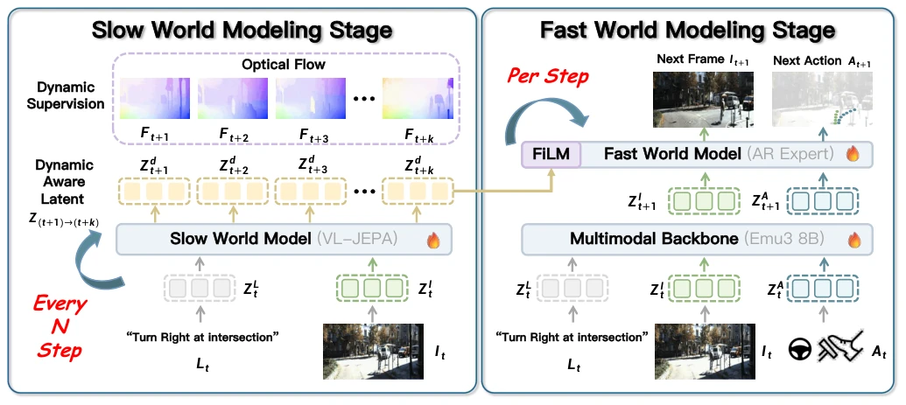
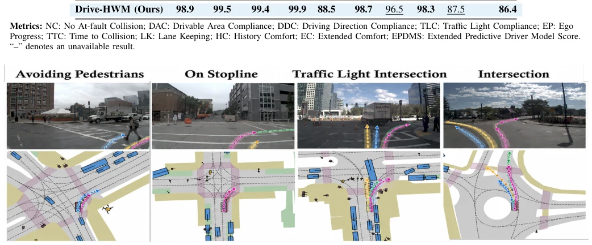
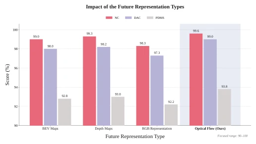
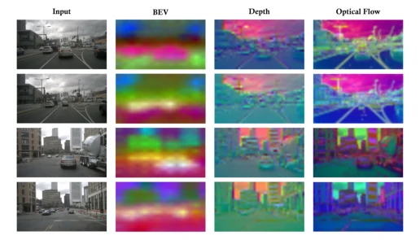
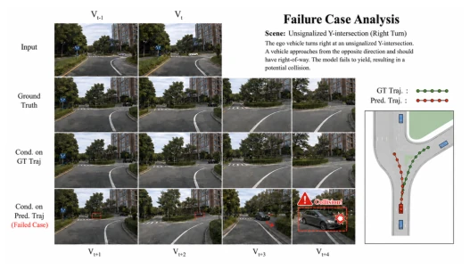
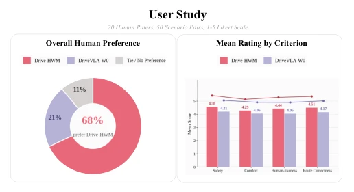

This paper implements a "dual-system" for the autonomous driving world model, where the slow model handles long-term planning and the fast model handles immediate reactions. Sounds very promising, after all, human driving involves both intuition and anticipation. But to be honest, this hierarchical architecture is no longer novel in academia; the dual-system theory in neuroscience has long been overused. However, the cleverness of Drive-HWM lies in using optical flow prediction to constrain the slow model's latent space, forcing the model to "understand" motion rather than guessing pixels blindly. This approach is much more pragmatic than simply predicting RGB frames, after all, when driving, one looks at dynamic changes rather than background textures. But there is a drawback: the slow model updates only once every 8 steps; what if unexpected situations occur within these 8 steps? Although the fast model can correct it, the sense of latency in information transmission still exists. The experimental data is indeed impressive, topping the leaderboard on NAVSIM, but is the improvement in computational efficiency really as significant as stated in the paper? After all, with an added slow branch, although inference latency is amortized, the total parameter count remains. Overall, this is a paper that grounds the concept of "world models" very solidly, with less flashy hallucination generation and more understanding of the essence of driving, but there is still a distance to true general intelligence.
The core difficulty of autonomous driving lies in the "unknowability of the future," yet decisions must be based on the future. Existing methods are mainly divided into three categories: VLA models such as [1], [3] are implicit world models that only output actions without explicitly predicting the future, resulting in a lack of explainable long-term planning capabilities in decision-making; explicit prediction models such as [4], [7], [8] are good at generating future videos but often detach from action generation, becoming mere simulators; recent joint prediction models such as [10] attempt to unify, but suffer from severe error accumulation under long time series, leading to failure in long-term prediction. As pointed out by [1], end-to-end driving requires online trajectory evaluation, but single time-scale models struggle to balance long-horizon foresight and short-horizon responsiveness. Drive-HWM attempts to resolve this contradiction: if prediction and actions are on the same time scale, either the prediction is inaccurate or the action response is slow. Existing work often ignores the explicit modeling of motion dynamics in the latent space, resulting in prediction results that are insensitive to scene evolution. Therefore, a hierarchical architecture is needed, where the slow model is responsible for capturing long-term motion trends, and the fast model is responsible for immediate decisions based on the latest observations, thereby finding a balance between long-horizon planning and immediate control.

Fig. 1: Comparison of three world modeling paradigms for autonomous driving. (a) Action-only models rely on spare action prediction. (b) Joint prediction world models jointly perform sparse action prediction and dense visual prediction. (c) Our hierarchical world model separates slow and fast world modeling.
方法Method
Drive-HWM 采用分层慢 - 快架构。整体流程上，慢速模型每隔 N 步（实验中为 8 步）运行一次，预测未来 K 步的动态潜在变量；快速模型在每个时间步运行，结合最新观测和慢速模型的预测生成动作。慢速模型核心是“动态感知潜在变量”（Dynamic-Aware Latents, DAL）。它不直接预测 RGB 帧，而是通过 VL-JEPA 架构预测多步光流场。光流作为监督信号，迫使潜在空间编码运动信息而非纹理细节。预测出的 DAL 序列包含场景演化的动态先验。快速模型基于 Emu3-8B 构建，作为动作预测骨干。它接收当前观测的视觉 token 和慢速模型注入的 DAL。DAL 通过 FiLM（Feature-wise Linear Modulation）机制调制快速模型的隐藏状态，将长期动态先验融入短期决策。快速模型采用自回归专家（Autoregressive Expert）联合预测下一帧视觉 token 和当前动作。下一帧预测作为辅助任务，提供密集的监督信号，防止模型走捷径，确保动作与场景过渡一致。训练目标包括慢速模型的光流损失、快速模型的动作损失和视觉预测损失。这种设计使得慢速模型专注于长时动力学，快速模型专注于即时响应，两者通过 DAL 耦合，实现了长视距规划与高频控制的有效结合。
Drive-HWM adopts a hierarchical slow-fast architecture. In the overall process, the slow model runs once every N steps (8 steps in the experiment), predicting dynamic latent variables for the future K steps; the fast model runs at each time step, combining the latest observations and the slow model's predictions to generate actions. The core of the slow model is "Dynamic-Aware Latents" (DAL). It does not directly predict RGB frames, but predicts multi-step optical flow fields through the VL-JEPA architecture. Optical flow serves as a supervision signal, forcing the latent space to encode motion information rather than texture details. The predicted DAL sequence contains dynamic priors of scene evolution. The fast model is built based on Emu3-8B, serving as the action prediction backbone. It receives visual tokens of current observations and DAL injected by the slow model. DAL modulates the hidden state of the fast model through the FiLM (Feature-wise Linear Modulation) mechanism, integrating long-term dynamic priors into short-term decisions. The fast model adopts an Autoregressive Expert to jointly predict the next frame visual token and current action. The next frame prediction serves as an auxiliary task, providing dense supervision signals to prevent the model from taking shortcuts and ensuring consistency between actions and scene transitions. Training objectives include the slow model's optical flow loss, the fast model's action loss, and visual prediction loss. This design enables the slow model to focus on long-term dynamics and the fast model to focus on immediate response; the two are coupled through DAL, achieving an effective combination of long-horizon planning and high-frequency control.

Fig. 2: Overview of the proposed slow–fast world modeling framework. The slow world model, updated every N steps, employs VL-JEPA to predict multi-horizon optical flow under dynamic supervision, producing Dynamic-Aware Latents Zd (t+1)→(t+k) that encode anticipated scene evolution. At every step, the temporally aligned dynamic latent is injected via FiLM into the fast world model built upon Emu3-8B. The autoregressive expert integrates the current instruction, observation, and action history to jointly predict the next action and next-frame visual tokens, enabling long-horizon dynamic awareness while remaining responsive to the latest observations.
Experiments are conducted on NAVSIM v1 and v2, with pre-training data being nuPlan. Main comparison baselines include DriveVLA-W0 [46], TransFuser [43], LAW [39], and other SOTA methods. Evaluation metrics cover NC (No-fault Collision), DAC (Lane Compliance), TTC (Time to Collision), EP (Ego Progress), and comprehensive PDMS score. In terms of results, Drive-HWM achieves a PDMS of 93.8 on NAVSIM v1 and an EPDMS of 86.4 on v2, both outperforming the same backbone DriveVLA-W0. Especially on NC and TTC metrics, the improvement is significant, proving that the slow model effectively improves long-term risk prediction capabilities. Ablation studies show that removing the slow model leads to a PDMS drop, indicating that long-term planning is indispensable; removing the fast model results in an inability to adapt to immediate changes. The effect is best when prediction horizon K=8; too long or too short affects performance. In terms of backbone network selection, the slow model using V-JEPA is superior to generative video models, and the fast model using Emu3 performs best. In terms of computational efficiency, although a slow branch is added, through amortized updates, the average latency is actually lower than the single-model baseline, achieving a win-win for performance and efficiency.

Fig. 3: Qualitative comparison of trajectories from different models in the front-facing camera and bird’s-eye view across diverse driving scenarios. Trajectories are shown for: Human Trajectory, Drive-HWM, DriveVLA-W0, Transfuser.

Fig. 4: Quantitative comparison of different prediction targets for supervising the slow world model. Optical-flow supervision consistently achieves the highest NC, DAC, and PDMS scores, demonstrating that explicitly modeling dense scene dynamics provides more informative future representations for down- stream driving decisions and action generation.

Fig. 5: Visualization of different future representations pre- dicted by the slow world model. Compared with BEV and depth representations, optical flow provides denser and more motion-discriminative cues, explicitly capturing scene dynam- ics and object displacements that are essential for modeling future evolution in autonomous driving.

Fig. 6: Failure case analysis of Drive-HWM at an unsignal- ized Y-intersection. The first row shows the observed input frames, followed by the ground-truth future observations. The third row shows future observations conditioned on the ground-truth trajectory, while the last row shows those con- ditioned on the predicted trajectory. In the failed rollout, an approaching vehicle progressively enters the ego vehicle’s path, while the predicted trajectory does not yield sufficiently, eventually resulting in a potential collision. The bird’s-eye- view visualization on the right compares the ground-truth and predicted ego trajectories.

Fig. 7: User study of Drive-HWM and DriveVLA-W0. Twenty human raters evaluate 50 paired driving scenarios. Drive-HWM is preferred in 68% of comparisons and con- sistently receives higher ratings in safety, comfort, human- likeness, and route correctness.